LOGO KOROKK · VERSI 1 · OKT 2026
Mihrab prompt
Lengkung mihrab dengan prompt terminal ›_ di dalamnya. Satu bentuk untuk dua waktu: siang di masjid, malam depan terminal.
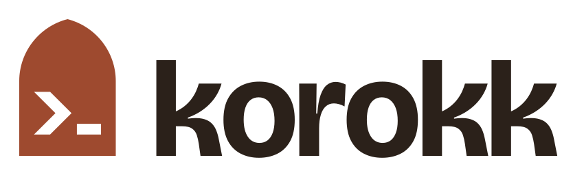
Binaan
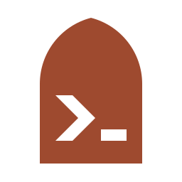
Lengkung runcing: dua lengkok jejari 96 di atas tapak 144 unit. Bucu atas tajam, tapak rata.
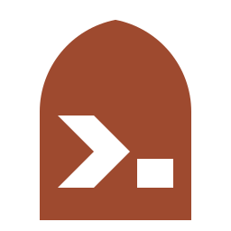
Versi kecil untuk 32 px ke bawah: lengkung lebih lebar, chevron dan kursor lebih tebal.
Versi terbalik: potongan ditebalkan 1 unit supaya tak nampak menipis atas latar gelap.
Warna
Simbol. 5.1:1 atas krim
Wordmark dan teks
Latar utama
Simbol atas ink (8.5:1)
Warna kedua laman, bukan untuk logo
Versi
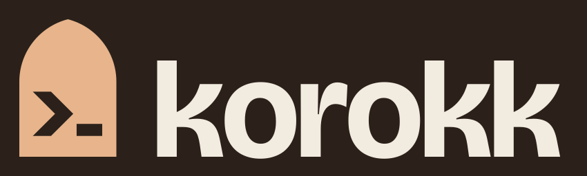
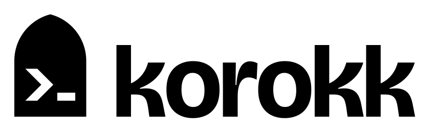
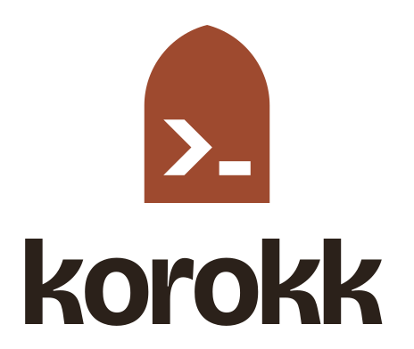
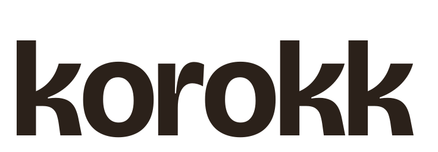
Ruang dan saiz
Ruang kosong keliling logo sekurang-kurangnya x = lebar kursor ( _ ), iaitu ¼ lebar lengkung.
Simbol: versi kecil di bawah 48 px. Susunan mendatar: lebar minimum 100 px; lebih kecil, guna simbol sahaja.
Jangan
- Letak simbol terakota atas latar ink (2.6:1, kabur). Guna terakota terang.
- Ubah jarak atau saiz relatif simbol dan wordmark. Guna fail susunan yang tersedia.
- Regang, condongkan, putar, atau tambah bayang, outline atau gradient.
- Tukar chevron dan kursor jadi warna lain. Ia lubang, bukan bentuk berwarna.
- Taip semula "korokk" dalam font lain. Wordmark ialah path, bukan teks.
Dalam penggunaan
Siang bilal,
malam coding.
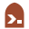
korokk.com Studio · korokk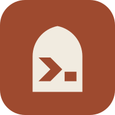
korokkHello world
Fail
svg/ · simbol, simbol-kecil, mendatar, bertindan, wordmark (warna · ink · hitam · putih · terbalik)
png/ · pratonton 1200 px dan simbol 1024 px
web/ · favicon.svg (ikut tema browser), favicon.ico (16/32/48), apple-touch-icon.png, icon-192/512, icon-maskable-512, site.webmanifest, head-snippet.html
Font wordmark: Bricolage Grotesque Bold (SIL OFL), dijadikan path. Jarak huruf −0.03em.